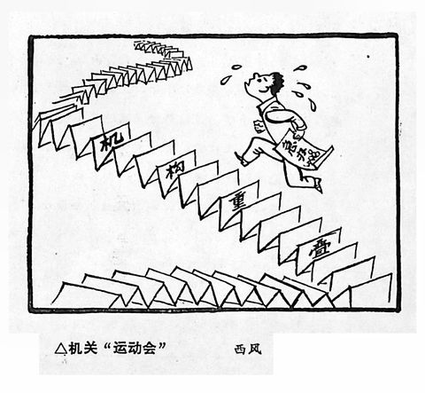
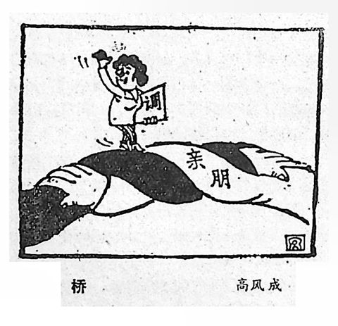
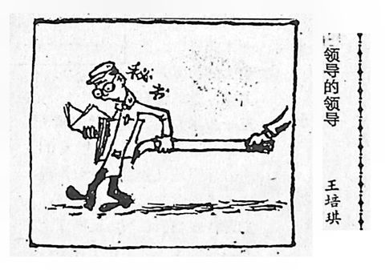
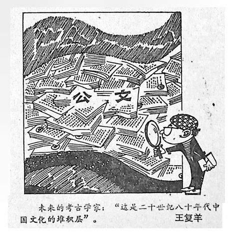
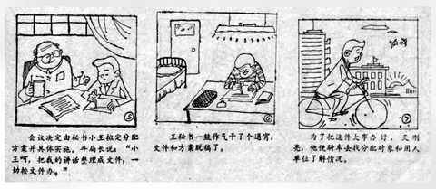
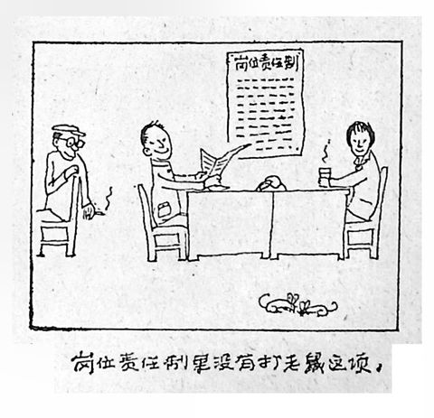
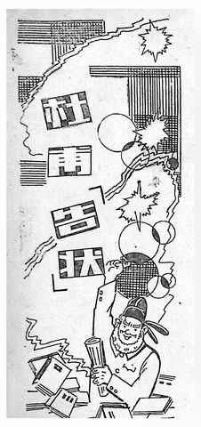
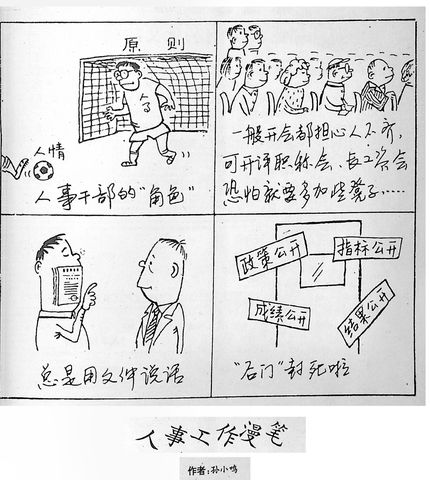

Paperwork and documents 33
-

机关"运动会" · The Office "Sports Meet"
Xi Feng 西风. Renshi (Personnel), 1986 no. 1 (whole no. 4), inside back cover. -
 无题 · (Untitled)
无题 · (Untitled)
Unattributed. Renshi (Personnel), 1986 no. 4 (whole no. 7), p. 47. -
 打入冷宫 · Banished to the Cold Palace
打入冷宫 · Banished to the Cold Palace
Wang Yan 王燕. Renshi (Personnel), 1986 no. 4 (whole no. 7), p. 47. -
 划圈（题图） · Drawing Circles (header illustration)
划圈（题图） · Drawing Circles (header illustration)
He Fei 和非. Renshi (Personnel), 1986 no. 6 (whole no. 9), p. 48. -
 划圈（插图） · Drawing Circles (inset illustration)
划圈（插图） · Drawing Circles (inset illustration)
He Fei 和非. Renshi (Personnel), 1986 no. 6 (whole no. 9), p. 48. -
 邪念恶行（题图） · Wicked Thoughts and Deeds (header illustration)
邪念恶行（题图） · Wicked Thoughts and Deeds (header illustration)
Unattributed. Renshi (Personnel), 1986 no. 7 (whole no. 10), p. 44. -
 无题 · Untitled
无题 · Untitled
Unattributed. Renshi (Personnel), 1986 no. 7 (whole no. 10), p. 48. -
 有意见请上来提 · If You Have Complaints, Come Up and Raise Them
有意见请上来提 · If You Have Complaints, Come Up and Raise Them
Luo Shichun 罗世春. Renshi (Personnel), 1986 no. 11 (whole no. 14), p. 40. -
 赶快落实 · Implement It Quickly
赶快落实 · Implement It Quickly
He Qing 禾青. Renshi (Personnel), 1986 no. 12 (whole no. 15), p. 46. -
 无题 · Untitled
无题 · Untitled
Jin Dayong 金大勇. Renshi (Personnel), 1987 no. 1 (whole no. 16), p. 47. -
 负负得正（插图） · Two Negatives Make a Positive (illustration)
负负得正（插图） · Two Negatives Make a Positive (illustration)
He Fei 和非. Renshi (Personnel), 1987 no. 1 (whole no. 16), p. 48. -

桥 · Bridge
Gao Fengcheng 高风成. Renshi (Personnel), 1987 no. 3 (whole no. 18), p. 44. -

领导的领导 · The Leader's Leader
Wang Peiqi 王培琪. Renshi (Personnel), 1987 no. 5 (whole no. 20), p. 43. -
 照章办事 · Going by the Rules
照章办事 · Going by the Rules
Drawn by Li Guozhong 李国忠; adapted by Qian Ren 黔仁. Renshi (Personnel), 1987 no. 5 (whole no. 20), inside back cover. -
 机关碰壁记（诗配画） · Running into a Wall at the Office (poem drawing)
机关碰壁记（诗配画） · Running into a Wall at the Office (poem drawing)
Drawn by Wang Chunsheng 王春生. Renshi (Personnel), 1988 no. 1 (whole no. 28), p. 29. -

未来考古 · Archaeology of the Future
Wang Fuyang 王复羊. Renshi (Personnel), 1988 no. 2 (whole no. 29), p. 47. -
 秘书小王 · Secretary Xiao Wang
秘书小王 · Secretary Xiao Wang
Adapted and drawn by Nai Dong 乃栋. Renshi (Personnel), 1988 no. 5 (whole no. 32), p. 29. -
 秘书小王（续一） · Secretary Xiao Wang (continued, 1)
秘书小王（续一） · Secretary Xiao Wang (continued, 1)
Adapted and drawn by Nai Dong 乃栋. Renshi (Personnel), 1988 no. 5 (whole no. 32), p. 30. -

秘书小王（续二） · Secretary Xiao Wang (continued, 2)
Adapted and drawn by Nai Dong 乃栋. Renshi (Personnel), 1988 no. 5 (whole no. 32), p. 31. -
 秘书小王（续三） · Secretary Xiao Wang (continued, 3)
秘书小王（续三） · Secretary Xiao Wang (continued, 3)
Adapted and drawn by Nai Dong 乃栋. Renshi (Personnel), 1988 no. 5 (whole no. 32), p. 32. -
 秘书小王（续四） · Secretary Xiao Wang (continued, 4)
秘书小王（续四） · Secretary Xiao Wang (continued, 4)
Adapted and drawn by Nai Dong 乃栋. Renshi (Personnel), 1988 no. 5 (whole no. 32), p. 33. -
 “知道了” · “Noted”
“知道了” · “Noted”
Drawn by Fang Cheng 方成; poem by Chen Xianrong 陈显荣. Renshi (Personnel), 1988 no. 5 (whole no. 32), inside back cover. -
 扯皮歌 · Song of Passing the Buck
扯皮歌 · Song of Passing the Buck
Drawn by Jiang Fan 江帆; poem by Chi Beiou 池北偶. Renshi (Personnel), 1988 no. 5 (whole no. 32), inside back cover. -

无题 · Untitled (“Catching mice isn't in the job responsibility system”)
Sun Xiaoming 孙小鸣. Renshi (Personnel), 1988 no. 8 (whole no. 35), p. 37. -
 补助（题图） · Allowances (title drawing)
补助（题图） · Allowances (title drawing)
Unattributed. Renshi (Personnel), 1988 no. 11 (whole no. 38), p. 39. -
 诚则灵 · Sincerity Brings Results
诚则灵 · Sincerity Brings Results
Liu Dezhang 刘德璋. Renshi (Personnel), 1988 no. 12 (whole no. 39), inside back cover. -
 “公开” · “Open”
“公开” · “Open”
Supplied by Jiang Sizhong 蒋思忠. Renshi (Personnel), 1989 no. 11 (whole no. 50), inside back cover. -

杜甫告状（题图） · Du Fu Files a Complaint (title drawing)
Unattributed. Renshi (Personnel), 1990 no. 1 (whole no. 52), p. 38. -
 百里挑一 · One in a Hundred
百里挑一 · One in a Hundred
Wang Daquan 王大全. Renshi (Personnel), 1990 no. 6 (whole no. 57), inside back cover. -
 孙猴儿不能提升（题图） · The Monkey Must Not Be Promoted (title drawing)
孙猴儿不能提升（题图） · The Monkey Must Not Be Promoted (title drawing)
Unattributed. Renshi (Personnel), 1990 no. 8 (whole no. 59), p. 40. -
 “秘办” · “The Secretary's Office”
“秘办” · “The Secretary's Office”
Wang Yan 王燕. Renshi (Personnel), 1990 no. 8 (whole no. 59), inside back cover. -
 造假学院招生简章（题图） · Admissions Prospectus of the College of Forgery (header drawing)
造假学院招生简章（题图） · Admissions Prospectus of the College of Forgery (header drawing)
Unattributed. Renshi (Personnel), 1990 no. 11 (whole no. 62), p. 40. -

人事工作漫笔 · Sketches of Personnel Work
Sun Xiaoming 孙小鸣. Renshi (Personnel), 1990 no. 11 (whole no. 62), inside back cover.